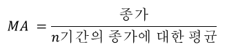
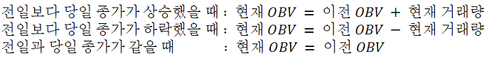
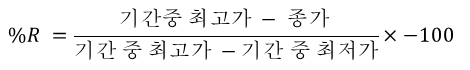

| Indicators | ||||
|---|---|---|---|---|
| MA | EMA | Bollinger Band | Parabolic SAR | |
| MACD | OBV | ROC | ADX | RSI |
| CCI | TRIX | Williams | Slow Stoch | Fast Stoch |
MA
Moving Average

단순 이동 평균으로 현재를 기준으로 과거종가에 대하여 평균값을 의미한다.
기간은 5일 20일 60일이 주로 사용된다. 단기적인 급상승에 영향을 적게 받는다.
순간적인 변화보다는 몇일간의 변화를 보기에 적당하다.
▲TOP
기간은 5일 20일 60일이 주로 사용된다. 단기적인 급상승에 영향을 적게 받는다.
순간적인 변화보다는 몇일간의 변화를 보기에 적당하다.
EMA
Exponential Moving Average
최근의 주가에 가중치를 더 주어 현재와 과거의 주가평균과 가중평균을 해준다.
이 결과값으로 EMA의 값으로 MACD와 PPO에 사용된다.
▲TOP
이 결과값으로 EMA의 값으로 MACD와 PPO에 사용된다.
Bollinger Band
Bollinger Band
볼린저 밴드는 이동평균을 이용한 가격변동 분석의 일종으로 주가 변동성을 반영한 지표이다.
볼린저 밴드는 주가의 방향성 뿐만 아니라 그 움직이는 폭을 파악하고자 하는 목적에서 이용된다.
볼린저 밴드에서 가격이 밴드를 돌파하여 움직이면 추세의 지속과 확장을 의미하고, 좁은 밴드 안에서 장기간 머물면 머물수록 가격 변동의 가능성이 커진다는 것을 의미한다. 일반적으로 주가가 상승추세일 때는 하한밴드에서 지지를 받고, 하락추세일 때는 상한밴드가 저항선으로 적용한다.
밴드가 커지면 추세강화, 밴드가 좁아지면 추세약화를 의미한다.
이 밴드의 단점은 장세에 따라 매매신호가 불투명하다는 것이다. 주가가 급등락할 경우에는 아주 잘 맞지만 주가가 완등락할 경우에는 잘 맞지 않는다. 따라서 변동이 매우 심한경우에는 매우 유용한 도구이다. 하지만 변동이 심하지 않은 경우나 예외적으로 변동이 심한 경우에도 상승추세때 상승이 지속되거나 하락추세때 하락이지속될 수 있어서 신뢰도가 높은편이 아니므로 주의 해야한다.
하한선 근처에서 주가가 움직일때(과도매도), 상한선 근처에서 주가가 움직일때(과도매수)를 나타낸다.
▲TOP
볼린저 밴드에서 가격이 밴드를 돌파하여 움직이면 추세의 지속과 확장을 의미하고, 좁은 밴드 안에서 장기간 머물면 머물수록 가격 변동의 가능성이 커진다는 것을 의미한다. 일반적으로 주가가 상승추세일 때는 하한밴드에서 지지를 받고, 하락추세일 때는 상한밴드가 저항선으로 적용한다.
밴드가 커지면 추세강화, 밴드가 좁아지면 추세약화를 의미한다.
이 밴드의 단점은 장세에 따라 매매신호가 불투명하다는 것이다. 주가가 급등락할 경우에는 아주 잘 맞지만 주가가 완등락할 경우에는 잘 맞지 않는다. 따라서 변동이 매우 심한경우에는 매우 유용한 도구이다. 하지만 변동이 심하지 않은 경우나 예외적으로 변동이 심한 경우에도 상승추세때 상승이 지속되거나 하락추세때 하락이지속될 수 있어서 신뢰도가 높은편이 아니므로 주의 해야한다.
하한선 근처에서 주가가 움직일때(과도매도), 상한선 근처에서 주가가 움직일때(과도매수)를 나타낸다.
Parabolic SAR
Parabolic Stop And Reverse
Parabolic SAR은 추세에 대하여 시간에 따라 AF(가속변수)를 고려하여 매매신호를 찾아낸다.
추세의 가속도가 충분할 정도의 수준을 유지하지 못할 경우에 추세전환이 발생한다는 점에 착안하여 Welles Wilder가 개발한 기법이다.
파라볼릭지표는 시장가격이 추세를 갖고 움직일 때 그 가속력이 떨어지면 추세가 전환되는 사실을 기반하여 만들었다.
즉, Parabolic SAR 지표는 추세 전환을 판단하는 지표이다.
주가보다 지표가 아래에 있으면 상승세, 지표가 위에 있으면 하락세를 의미하고 교차되는 시점이 오면 반전을 예상할 수 있다.
SAR는 Stop And Reverse로 지표와 종가가 만나면 보유한 포지션에서 반대포지션으로 취하기 때문이다.
▲TOP
즉, Parabolic SAR 지표는 추세 전환을 판단하는 지표이다.
주가보다 지표가 아래에 있으면 상승세, 지표가 위에 있으면 하락세를 의미하고 교차되는 시점이 오면 반전을 예상할 수 있다.
SAR는 Stop And Reverse로 지표와 종가가 만나면 보유한 포지션에서 반대포지션으로 취하기 때문이다.
MACD
Moving Average Convergence / Divergence
MACD Line에서 단기는 12일, 장기는 26일을 주로 사용하며
MACD Signal Line의 n일은 9일의 MACD EMA를 주로 사용한다.
MACD는 기간이 다른 이동평균선 사이의 관계를 활용하여 주가의 추세를 나타내주는 기술적 지표이다. 단기 이동평균 및 장기 이동평균선 간의 상호관계에서 중요한 특성인 확장(Divergence)과 수렴(Convergence)를 반복하는 특성을 이용한다.
MACD가 Signal Line 아래 이면 매도 / 위면 매수한다. 즉 MACD 선이 0선을 상향(골드크로스)하면 매수하고, 0선을 하향이탈(데드크로스)하면 매도하기도 하지만 위험부담이 매우 크다.
MACD의 급격한 움직임은 시장의 과매도, 과매수 상태이다.
매수 Divergence란 주가의 저점은 낮아지는데 MACD의 저점은 같아지거나 높아지는 현상으로 상승추세에서 매수타이밍을 포착할때 유용하다. 매도 Divergence란 주가의 고점은 높아지는데 MACD의 고점은 같거나 낮아지는 현상으로 하락추세에서 매도타이밍을 포착할때 유용하다.
▲TOPMACD는 기간이 다른 이동평균선 사이의 관계를 활용하여 주가의 추세를 나타내주는 기술적 지표이다. 단기 이동평균 및 장기 이동평균선 간의 상호관계에서 중요한 특성인 확장(Divergence)과 수렴(Convergence)를 반복하는 특성을 이용한다.
MACD가 Signal Line 아래 이면 매도 / 위면 매수한다. 즉 MACD 선이 0선을 상향(골드크로스)하면 매수하고, 0선을 하향이탈(데드크로스)하면 매도하기도 하지만 위험부담이 매우 크다.
MACD의 급격한 움직임은 시장의 과매도, 과매수 상태이다.
매수 Divergence란 주가의 저점은 낮아지는데 MACD의 저점은 같아지거나 높아지는 현상으로 상승추세에서 매수타이밍을 포착할때 유용하다. 매도 Divergence란 주가의 고점은 높아지는데 MACD의 고점은 같거나 낮아지는 현상으로 하락추세에서 매도타이밍을 포착할때 유용하다.
OBV
On Balance Volume

OBV는 거래량을 활용한 지표로서 거래량은 항상 주가에 선행한다는 것을 전제로 거래량 분석을 통해 주가를 분석하는 기법이다.
기준일을 시작으로 주가가 상승한 날의 거래량은 더하고 하락한 날의 거래량은 차감하여 그 누적값을 차트로 그려준다.
OBV의 상승은 매입 세력의 집중이고 OBV의 하락은 매입 세력의 분산을 의미한다.
OBV가 상승하는 반면 주가가 하락하면 조만간 주가 상승을 예상하고
OBV가 하락하는 반면 주가가 상승하면 조만간 주가 하락이 예상된다.
▲TOP
기준일을 시작으로 주가가 상승한 날의 거래량은 더하고 하락한 날의 거래량은 차감하여 그 누적값을 차트로 그려준다.
OBV의 상승은 매입 세력의 집중이고 OBV의 하락은 매입 세력의 분산을 의미한다.
OBV가 상승하는 반면 주가가 하락하면 조만간 주가 상승을 예상하고
OBV가 하락하는 반면 주가가 상승하면 조만간 주가 하락이 예상된다.
ROC
Rate Of Change
가격 차에 따른 상대 비교를 위해 모멘텀을 이용한다.
현재 가격의 추세가 상승세인지 하락세인지 알려주는 지표이다.
단기간내에 변동폭이 심하다면 상승세인지 하락세인지 예측하기가 어렵다. 따라서 여러 기간을 이용하여 보는 것을 추천한다.
0을 기준으로 값이 양수이면 상승세를 의미하고 음수이면 하락세를 의미한다.
▲TOP
현재 가격의 추세가 상승세인지 하락세인지 알려주는 지표이다.
단기간내에 변동폭이 심하다면 상승세인지 하락세인지 예측하기가 어렵다. 따라서 여러 기간을 이용하여 보는 것을 추천한다.
0을 기준으로 값이 양수이면 상승세를 의미하고 음수이면 하락세를 의미한다.
ADX
Average Directional Index
DX는 그래프에서 방향이동에 대한 백분율을 표시하고 ADX는 이 DX에 대한 평균을 의미한다.
ADX는 추세 방향과 관계가 없다. 따라서 ADX는 그 값이 클 수록 강한 추세를 나타내는 시장으로 판단하며, 작을 수록 추세가 약한 시장으로 판단한다.
ADX를 가지고 그 추세가 상승추세인지 하락추세인지 알 수 없다.
ADX는 추세의 강도만을 측정할 수 있다.
예를 들어 가격이 하락할 때 ADX가 급격히 증가한다면, 그것은 하락추세의 강도가 강화되고 있다고 이해할 수 있다.
▲TOP
ADX를 가지고 그 추세가 상승추세인지 하락추세인지 알 수 없다.
ADX는 추세의 강도만을 측정할 수 있다.
예를 들어 가격이 하락할 때 ADX가 급격히 증가한다면, 그것은 하락추세의 강도가 강화되고 있다고 이해할 수 있다.
RSI
Relative Strength Index
현재 추세의 강도를 백분율로 나타낸 보조지표로 RSI로 추세의 강도를 측정하고 추세의 전환시기를 예상할때 사용한다.
RSI가 0 : 특정 기간동안 계속 하락만 했다는 의미이다.
RSI가 100 : 특정 기간동안 상승만 했다는 의미이다.
RSI가 70 이상이면 과매수권으로 보고 매도를 준비한다.
RSI가 30 이하이면 과매도권으로 보고 매수를 준비한다.
즉 RSI값이 30이하나 70 이상에서 직전 최저치나 최고치를 갱신하지 못하고 진행방향을 바꾸면 주가의 추세전환이 임박했다는 신호이다.
▲TOP
RSI가 0 : 특정 기간동안 계속 하락만 했다는 의미이다.
RSI가 100 : 특정 기간동안 상승만 했다는 의미이다.
RSI가 70 이상이면 과매수권으로 보고 매도를 준비한다.
RSI가 30 이하이면 과매도권으로 보고 매수를 준비한다.
즉 RSI값이 30이하나 70 이상에서 직전 최저치나 최고치를 갱신하지 못하고 진행방향을 바꾸면 주가의 추세전환이 임박했다는 신호이다.
CCI
Commodity Channel Index
가격이 평균가격의 이동평균과 떨어져 있는 정도를 표시한다. 추세의 강도와 방향을 표시하는 지표이다.
CCI의 절대값이 크다는 것은 추세가 강하다고 해석할 수 있다.
CCI가 양수인경우 상승추세, 음수인 경우는 하락추세이다.
▲TOP
CCI의 절대값이 크다는 것은 추세가 강하다고 해석할 수 있다.
CCI가 양수인경우 상승추세, 음수인 경우는 하락추세이다.
TRIX
Tripple Smoothed Moving Averages
매우 부드럽게 이동평균의 백분율을 변동속도로 표시해주는 지표이다.
부드럽게 한다는것은 무의미한 가격의 움직임을 필터링하도록 해주는 것을 의미한다.
따라서 전체적인 그래프를 매우 부드러운 곡선으로 볼 수 있도록 해준다.
▲TOP 부드럽게 한다는것은 무의미한 가격의 움직임을 필터링하도록 해주는 것을 의미한다.
따라서 전체적인 그래프를 매우 부드러운 곡선으로 볼 수 있도록 해준다.
Williams
Williams' %

Larry Williams 가 개발한 Williams %R 은 %R이라 불리기도한다. %R은 과매수와 과매도의 수준을 측정하는데 매우 유용하다.
빠른 Stochastic Oscillator에 속하며 상대적으로 주변의 수준을 낮게 반영하여 기간에 대하여 가장 높은 기준을 반영하는 지표이다.
%R은 -100 ~ 0 의 값을 가지며, -20보다크면 과매수, -80보다 작으면 과매도 이다.
▲TOP
빠른 Stochastic Oscillator에 속하며 상대적으로 주변의 수준을 낮게 반영하여 기간에 대하여 가장 높은 기준을 반영하는 지표이다.
%R은 -100 ~ 0 의 값을 가지며, -20보다크면 과매수, -80보다 작으면 과매도 이다.
SlowStoch
Slow %K Stochastics
현재 주가위치를 백분율로 나타낸다. 주가가 상승추세일때 일정기간동안 고가권에 위치하게되고 하락추세일때 저가권에 위치하게 되는 주가의 특성을 이용한 지표이다.
Fast Stoch와 다른점은 주가 변화에 더 둔하게 반영되면서, 시장의 의미없는 주식변화를 필터링 할수 있다. Fast Stoch보다 더 많이 사용된다.
%K는 일정기간 동안의 고가와 저가 사이에 금일의 종가가 어디에 위치하는가를 나타낸다. %D 또는 Slow %K는 %K의 N일간의 이동평균값이다. Slow %D는 %D의 N일간의 이동평균값이다. N은 주로 3일을 사용한다.
Slow %K 80 이상의 영역은 과매수상태를 나타내며 Slow %K값이 이 영역을 하향이탈하는 시점에서 매도한다.
Slow %K 20 이하의 영역은 과매도상태를 나타내며 Slow %K값이 이 영역을 상향이탈하는 시점에서 매수한다.
▲TOP
Fast Stoch와 다른점은 주가 변화에 더 둔하게 반영되면서, 시장의 의미없는 주식변화를 필터링 할수 있다. Fast Stoch보다 더 많이 사용된다.
%K는 일정기간 동안의 고가와 저가 사이에 금일의 종가가 어디에 위치하는가를 나타낸다. %D 또는 Slow %K는 %K의 N일간의 이동평균값이다. Slow %D는 %D의 N일간의 이동평균값이다. N은 주로 3일을 사용한다.
Slow %K 80 이상의 영역은 과매수상태를 나타내며 Slow %K값이 이 영역을 하향이탈하는 시점에서 매도한다.
Slow %K 20 이하의 영역은 과매도상태를 나타내며 Slow %K값이 이 영역을 상향이탈하는 시점에서 매수한다.
FastStoch
Fast %K Stochastics
현재 주가위치를 백분율로 나타낸다.
종가가 N기간내에 어느 곳에 위치하는지를 보여주는 %K를 이용하여 %D를 MA을 구하여 좀더 완화하여 볼수 있는데
%K는 Stoch의 변화를 바로 볼수 있고 %D는 완화하여 볼수 있도록 되어있지만 Slow Stoch보다 신뢰도가 떨어진다.
%K는 일정기간 동안의 고가와 저가 사이에 금일의 종가가 어디에 위치하는가를 나타낸다.
%D 또는 Fast %K는 %K의 N일간의 이동평균값이다. Fast %D는 %D의 N일간의 이동평균값이다. N은 주로 3일을 사용한다.
▲TOP
%K는 일정기간 동안의 고가와 저가 사이에 금일의 종가가 어디에 위치하는가를 나타낸다.
%D 또는 Fast %K는 %K의 N일간의 이동평균값이다. Fast %D는 %D의 N일간의 이동평균값이다. N은 주로 3일을 사용한다.